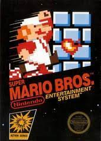
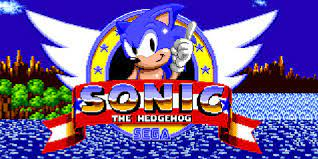
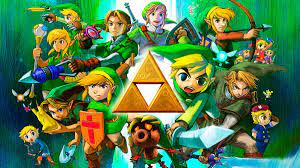
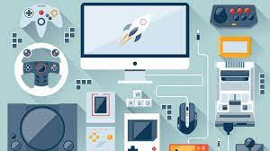

Desarrollo de los videojuegos
Descripcion
Videojuegos
Son un tipo de juegos que hacen uso de la tecnología para permitir una
interface de tipo virtual, la cual ofrece una experiencia interactiva tanto individual o multijugador,
esto puede ser por medio de diversos dispositivos que van desde un ordenador de pc, pasando por
consolas especializadas, hasta dispositivos móviles inteligentes y tabletas y las las terminales
usadas para el control de los mismos dependen del equipo en cuestión y se conocen como control de
videojuegos. En la actualidad, jugar videojuegos ha alcanzado un nivel de popularidad de gran magnitud
a nivel mundial, incluso convirtiéndose en un negocio global a través de su comercialización por
ejemplo en una tienda de videojuegos.
Desde el punto de vista etimológico la palabra está compuesta por video y
juego, la primera proviene del verbo latín videre que significa ver y en la segunda también procede
del latín iocum que se refiere a algo chistoso o divertido.
gracias a diversos dispositivos, un jugador o jugadora puede interactuar con un videojuego. Podemos
pensar la interactividad como una forma de comunicación en la que una acción proveniente de un programa
o medio es resultado de la acción de un usuario.
Es decir, la interactividad se trata de un proceso en el que la acción de un
agente (jugador) conlleva una reacción de un programa o máquina. Un ejemplo de esto se da cuando el
jugador realiza una acción y sabe que el personaje del videojuego reaccionará a la misma. La
interactividad es una de las características clave de un videojuego, ya que el juego reacciona a
nuestras acciones, y nuestras acciones tienen consecuencias en el juego.
Esta interactividad construye la relación que mantenemos con el juego. Se cree que la experiencia que
un jugador o jugadora tiene con un videojuego es única. Esto sucede porque tanto la experiencia
como el resultado de las acciones y reacciones que un jugador tiene con un videojuego dependen de
muchos factores.
Ejemplos de algunos juegos:
Juegos de aventura:
| The Pillar |
Limbo |
Terraria |
| Minecraft |
The Legend Of zelda |
Killer Snake |
| God of war |
The last of us |
Rayman |
Juegos de accion:
| Halo |
Call of duty |
Fortnite |
| gears of war |
Roblox |
Tom rider |
Juegos de plataforma:
| Mario bros |
Metroid |
Crash bandicoot |
| Vector |
Little big planet |
Banjo kazooie |
Algunos de los juegos mas iconicos de la historia

Super mario bros

Sonic the hedgehog

The Legend of Zelda

GTA 5
×

Temas de interes:
Como afecta la programación al desarrollo de los videojuegos
Los videojuegos despegaron con herramientas de lo más rudimentarias. En la década de los ochenta –aunque Nintendo y Atari lo alargaron a lo largo de los noventa–, cada juego se hacía directamente en la máquina sobre la que iba a correr. Lo más común eran los lenguajes de bajo nivel, es decir, cuyas instrucciones controlan el hardware directamente y deben tener muy en cuenta sus características físicas. Los ensambladores obligaban al programador a realizar tareas como la liberación de memoria y el control del flujo de registros, cosas que requerían un conocimiento exhaustivo de la máquina sobre la que estaban trabajando. La principal ventaja de esta tediosa técnica era el aprovechamiento del 100% de las capacidades de la máquina; por contra, ello suponía desarrollar una versión casi exclusiva para cada una. Por ello, según sus características gráficas, de audio, métodos de entrada y componentes, los juegos diferían mucho de una plataforma a otra. Lenguajes de medio nivel como Basic facilitaban en cierta medida estas tareas a cambio de sacrificar potencia de cálculo en una época en la que los juegos aprovechaban hasta el último bit de memoria y hacían malabares para dibujar colores en pantalla.
El paso al alto nivel
A medida que las máquinas y consolas se hicieron más potentes y los juegos más y más complejos, el esfuerzo que requería codificar para el ensamblador fue cada vez menos productivo. Los lenguajes de alto nivel recogieron el testigo y siguen usándose en todos los estudios hoy en día. En lugar de tratar directamente con direcciones de memoria e instrucciones a la máquina, éstos abstraen todos esos conceptos, convirtiéndolos en objetos, bucles, variables y clases que son mucho más fáciles de entender para el cerebro humano. Pese a desviar la atención de la eficiencia a la facilidad de uso, los programadores siguen teniendo que optimizar mucho sus funciones, sobre todo aquellas que se ejecutan a cada fotograma. El rey de la programación de videojuegos es C++ y sus variantes C y C#. Bastante accesible y compatible con innumerables plataformas, es el mejor punto de partida para aprender a programar, pues facilita mucho el aprendizaje de otros lenguajes todavía más abstractos (es decir, fáciles de aprender) con los que comparte parte de su estructura. La mayoría de títulos AAA llevan en su interior una de las versiones de C++. El mercado de los juegos para móvil se mueve al son de las aplicaciones de cada sistema: Android funciona con el omnipresente Javascript, usado en todo tipo de aparatos electrónicos; iOS usa Swift, un lenguaje recién nacido con una sintaxis clara y simple; y el agónico Windows Phone usa el estándar C#. En entornos web HTML5 lleva años tomándole la delantera al veterano Adobe Flash, que ha quedado relegado casi exclusivamente a los juegos de Facebook tras su abandono por parte de la mayoría de gigantes de Internet.
El derribo de barreras de los motores de juego
Como te contamos en este artículo, en el presente milenio han surgido y evolucionado muchos motores gráficos, tanto propietarios como abiertos al mundo, que aligeran un montón la carga de trabajo de los programadores. Unreal Engine acepta código en C++ y Unity lo hace con Javascript y C#. Algunos motores incluyen lenguajes de programación gráfica que requieren muy pocos conocimientos sobre código. Sin embargo, su existencia se debe a que sus creadores quieren que use su motor tanta gente como sea posible. Su facilidad de uso va a costa del rendimiento del juego, por lo que sólo algunos estudios indie y desarrolladores en solitario lo adoptan como herramienta principal. Así pues, pese a que el uso de un motor es muy recomendable, al programador nunca le bastará con un lenguaje visual. Adentrarte en el mundo de la programación de videojuegos es ahora más fácil que nunca. Si tienes cierta experiencia en cualquier lenguaje de alto nivel, nuestro Máster y su especialización en programación te aportarán todo lo que necesitas para convertirte en un desarrollador de videojuegos.
La programación en los videojuegos es muy importante, ya que es un gran ámbito en los videojuegos porque le da función a todo, ya sea el mapeado de un lugar, las características de un NPC o MOB (“personaje no jugador o enemigos”) ya sean sus funciones o la inteligencia artificial de estos, las físicas de los objetos, si es un shooter (“juego de disparos”) como se programan las armas, animaciones y sonidos, el estilo del videojuego en primera o tercera persona, entre muchas otras cosas. Haciendo que estas características hagan que la experiencia sea más memorable para los jugadores Para poder hacer que un videojuego se sienta más realista y divertido de jugar.
Pero no solo el ambiente y las funciones de un juego son importantes, sino de como este se envuelve en su ámbito, como su historia, los minijuegos que tiene, su modo multijugador si lo posee, sus coleccionables que son objetos repartidos por todo el mapa o tipo premios en unos juegos y los logros que posee que hacen que el videojuego sea más divertido y hace que pasmos más tiempo en el explorando.
Pero también se debe tomar en cuenta de cómo se adapta un juego a una consola o un celular, como el ancho de pantalla o cómo funciona el mando o touch y incluso existen los emuladores que hacen lo mismo que una adaptación, pero a la inversa ya que se hacen emuladores de consolas que sirven en las computadoras.

Fase de Planificación
Esta etapa tiene como objetivo identificar las diferentes
tareas para desarrollar el videojuego. Se reparte el trabajo
entre los distintos componentes del equipo de desarrollo,
se fijan plazos de entregas, se planifican reuniones de
seguimiento, etc.
Fase de produccion
Una vez se tiene claro lo que hay que hacer, cómo hacerlo, y
se ha planificado el tiempo para llevarlo a cabo, entonces
se empieza la producción con el objetivo de crear el juego,
como mínimo en una versión inicial o prototipo a mejorar
gradualmente. Se llevan por tanto a cabo todas las tareas de la fase de
planificación teniendo como guía el documento de diseño:
programación, ilustración, desarrollo de interfaces,
animación, modelado, desarrollo del sonidos, etc.
Si finalmente se logra ensamblar correctamente todas
las piezas entonces esta fase culmina (por ahora).
Sin embargo, al igual que en el desarrollo de software
tradicional, es muy difícil que todo salga bien a la
primera, por lo que se entra en una fase para probar
a fondo el videojuego.
Fase de Pruebas
En esta etapa se corrigen los errores del proceso de
programación y se mejora la jugabilidad a medida que
se prueba el juego.
Generalmente encontraremos dos tipos: las pruebas alpha,
realizadas por un pequeño grupo de personas generalmente
involucradas en el desarrollo, y las pruebas beta,
realizadas por un equipo externo de jugadores. Las
primeras tienen el objetivo de corregir defectos graves
y mejorar características fundamentales no contempladas
en el documento de diseño, mientras que las segundas se
enfocan en detectar fallos menores y perfilar la
experiencia de usuario.
Propuestas de programacion en los videojuegos
¿De verdad lo que quieres es programar videojuegos?
Parece una tontería de pregunta, pero es clave. En
el desarrollo de videojuegos existen varia áreas,
estas son las cinco principales: Diseño, Programación,
Gráficos, Audio, Distribución y Marketing. Vamos a pasar
a analizarlas brevemente.
Diseño. La parte más importante de un videojuego. Historia,
Guión, jugabilidad, reglas y demás conceptos que hacen a un juego ser lo que es.
Programación. Una vez elaborado un diseño es la parte donde
se juntan gráficos, audios y reglas para dar vida a un mundo
interactivo. Existen varias disciplinas a su vez dentro de ella
como programación gráfica, gameplay o inteligencia artificial.
Gráficos. Interfaces, modelos 3D, animaciones y todo lo que “se ve”
de el videojuego, existen varias disciplinas tanto en 2D como en 3D.
Audio. Efectos de sonido, música de fondo, diálogos. Muy importante
para crear ambiente.
Distribución y marketing. El arte de publicar y promocionar un videojuego,
responsable del éxito o no de muchos productos dependiendo de las
estrategias que sigan.
Programar videojuegos, sus áreas
Los grandes estudios tienes varias decenas de programadores,
especializados en diferentes áreas. En programación de videojuego
los principales equipos y/o disciplinas que puedes encontrar son
los siguientes.
Programación del motor. Son los encargados de implementar la base
sobre la que se sustenta el videojuego. Comunicación con el sistema
operativo, gestión de memoria, gestión de cadenas, gestión de recursos,
etc. Son necesarios grandes conocimiento de la plataforma para la que
se programa, algoritmia y complejidad, opimización y gestión a bajo nivel.
Programación gráfica. Su misión es lidiar con las diferentes apis
gráficas como DirectX y OpenGL. Conocimienos de dichas apis, y matemáticas
sobre todo álgebra y geometría.
Video de apoyo para saber con que lenguaje programar